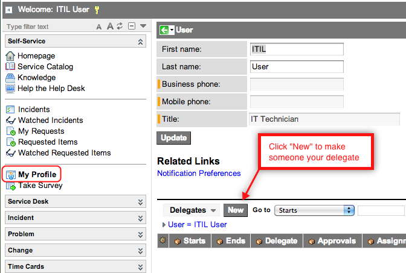
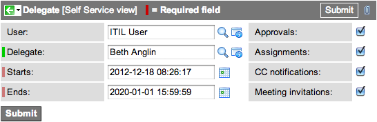

Service Delegation
From ServiceNow Wiki
| |
Note: This article applies to Fuji. For more current information, see Service Delegation at http://docs.servicenow.com
The ServiceNow Wiki is no longer being updated. Please refer to http://docs.servicenow.com for the latest product documentation. |
Contents
1 Overview
Service delegation is the ability to designate other users to view and interact with approvals and tasks assigned or sent to you, and to receive copies of all email notifications sent to you.
| |
Note:
|
2 Adding the Delegates Related List to User Profiles
By default, the Delegates related list is hidden from the User Profile form. An administrator or a user with the personalize_form role must add the Delegates related list to the User Profile form.
| Delegate related list | Description |
|---|---|
| Delegates->Delegates | Shows a list of users for whom the current user is a delegate. For example, if the current user is the ITIL User, the list shows users where Delegate = ITIL User. |
| Delegates->User | Shows a list of users who are delegates of the current user. For example, if the current user is the ITIL Admin, the list shows delegates where User = ITIL Admin. |
- Navigate to Self Service > My Profile.
- Configure the form and add the Delegates->User related list.
3 Delegating Approvals and Tasks to Another User
If a user is out of the office, s/he can delegate responsibilities to other users for a period of time. To make another user your delegate:
- Navigate to Self Service > My Profile.
- In the Delegates related list, click New.
- If the list is not visible, configure the form to add the Delegate->User related list.
- Select the Delegate (User).
- Set the period of time.
- Specify the responsibilities the delegate will assume using the check boxes. You can delegate:
- Approvals: The delegate can approve items on your behalf.
- Assignments: The delegate can view and work on tasks assigned to you.
- CC Notifications: The delegate receives a copy of email notifications sent to you, except those marked Meeting Invitation.
- Meeting Invitations: The delegate receives a copy of email notifications sent of the type Meeting Invitation.
| |
Note: You must select an active user as your delegate. The instance only delegates to active users. |

{kind=link}
Delegates related list
A sample delegation looks like this:

{kind=link}
Delegation options
| |
Note: If your delegate gets email notifications, they will be the same email notifications sent to you. The delegate may be confused to see "Incident assigned to you" emails, so make sure they know they are a delegate. |
Was this article helpful?
Yes, I found what I needed
No, I need more assistance